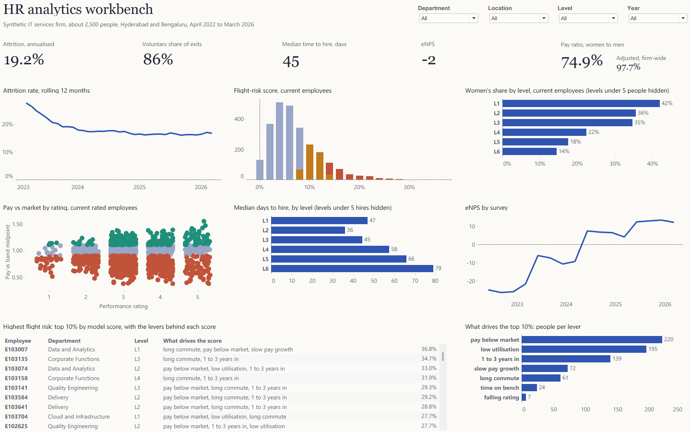
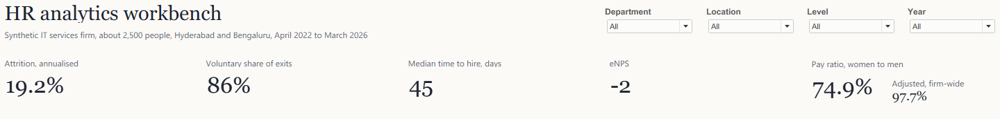
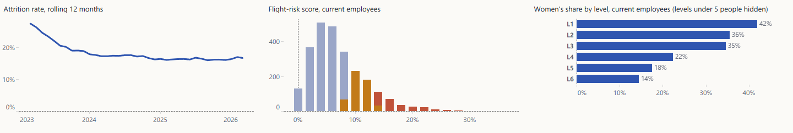
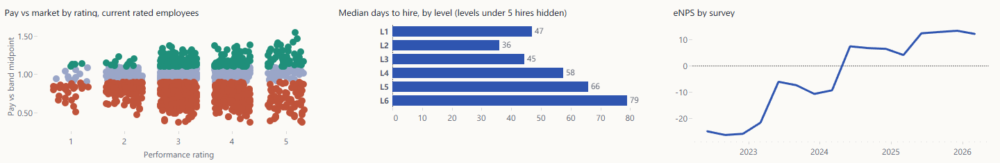
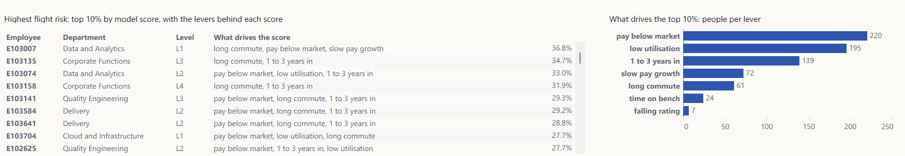
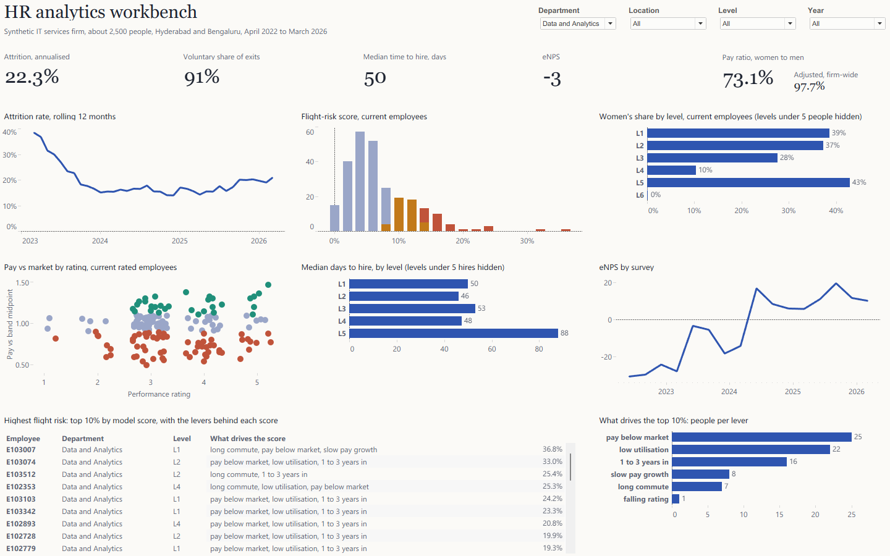

Who leaves, why, and who's next
An end-to-end people-analytics build: four years of synthetic HR records for an Indian IT services firm, a tested SQL model in DuckDB, a flight-risk model held to a fairness check, and a Tableau workbench generated entirely from code.
The problem
An HR team's data lives in separate systems: the HRIS holds people and job changes, payroll holds pay, the ATS holds requisitions, and the survey tool holds anonymous engagement scores. Each answers a narrow question. The questions leadership asks cut across all of them: how fast are we losing people, which leavers hurt, are we paying fairly, and who is likely to go next?
The brief was one workbench that answers those questions for any department, location, level or year, with every number traceable to a source row and a flight-risk score that is useful without being unfair.
Why synthetic data. Real HR records are confidential. Instead of a toy table, I wrote a generator that produces the exports an HR analyst would actually pull, with planted effects for the analysis to find. That also lets me check whether the methods recover what I know is there.
The company and the data
A fictional IT services firm of about 2,500 people in Hyderabad and Bengaluru, April 2022 to March 2026: seven departments from Delivery to Corporate Functions, six levels from Associate to Director. The generator (src/generate.py, seeded, so it's reproducible) simulates the firm month by month:
- Leaving: voluntary exits rise with pay below the market band, slow pay growth, a long wait for promotion, a long commute, time on the bench and the 1 to 3 year tenure window, and peak in FY 2022-23, the post-pandemic hiring war.
- Planted unfairness: gender has no direct effect on leaving, but women are paid about 3.5% less for the same job and rating, and are promoted less often, so they thin out by level.
- Exports (9 files): employees, job history, compensation, ratings, exits, requisitions, eNPS responses, monthly utilisation and a market salary benchmark: 150,317 rows in all.
- Survey privacy: eNPS responses carry no employee ID, as in real survey tools, so engagement can only be cut by department, location and level band.
Background is limited to home region, university tier and hiring source. Caste and religion are deliberately not modelled.
The pipeline
Four SQL files, each one layer: staging types the raw exports; model builds a monthly snapshot of every employee with every attribute as it stood at month end; features turns quarterly snapshots into model inputs and labels; marts produce report-ready tables. src/pipeline.py runs them, trains the model, runs the checks, and only then exports.
- Point-in-time joins. Level, salary, rating and market band are attached with DuckDB
ASOFjoins, so a month never sees a pay rise or rating that happened later. Without this, a model quietly learns from the future. - Rolling rates that survive filters. 12-month exits and headcount are stored per department, level, location and gender on a dense month grid. Any filter combination sums them to an exact rolling attrition rate, which a dashboard table calculation can't do once a year filter cuts the history.
- One table for Tableau. Monthly headcount, current employees, requisitions, survey responses and risk levers are stacked into one long table with a record type. Every filter then reaches every view without blending data sources.
Proving it
The pipeline refuses to export unless every check returns zero failing rows.
| Check | What it guarantees |
|---|---|
| Headcount rolls forward | Last month plus hires minus exits equals this month, for every month. |
| Exit and hire totals match the source | The monthly mart neither drops nor duplicates a movement. |
| Rolling 12-month values match a direct count | The attrition trend is exact for every department and month. |
| Filled requisitions match the person hired | ATS and HRIS agree on date, department, level and location. |
| Survey responses carry no employee identifier | eNPS stays anonymous all the way to the dashboard. |
| The model uses no protected or background attributes | Gender, age, home region and university tier never become features. |
| The test period starts after every training label has resolved | No leakage from the future into the model's score. |
Plus eight more: every employee-month has a level, salary and band; nobody leaves before joining or twice; one hire record each; promotions move exactly one level; ratings and scores in range; one risk score per current employee; pay equity covers everyone; workbench rows reconcile to their marts.
Testing the tests. A check that can't fail is worthless, so each one was run against data broken on purpose in the way it guards against (for example a rolling value off by one, or a workbench row deleted). Every break was caught.
Same answer every run. An early version gave a slightly different model on every run: DuckDB returns rows in no fixed order, and the model's internal validation split follows row order. The queries now sort their rows, and three consecutive runs produce byte-identical outputs.
Dashboard matches source. Tableau's numbers were compared with an independent DuckDB calculation for the whole firm and for three filtered views:
| View | Attrition | Voluntary share | Days to hire | eNPS | Pay ratio |
|---|---|---|---|---|---|
| Whole firm | 19.2% | 86% | 45 | −2 | 74.9% |
| Data and Analytics | 22.3% | 91% | 50 | −3 | 73.1% |
| Bengaluru, FY 2024-25 | 17.2% | 88% | 45 | 6 | 67.5% |
| Senior levels, FY 2022-23 | 15.2% | 91% | 70 | −23 | 90.9% |
All 20 values were identical in Tableau and DuckDB.
The flight-risk model
The question is practical: who on the books today is most likely to resign in the next six months, and what could HR change?
- Training data: quarterly snapshots of every employee, labelled by whether they resigned within six months. Involuntary exits are treated as unknown outcomes, not as stayers.
- Honest validation: trained on snapshots up to September 2023 and tested on March 2024 onwards, so the test is the future the model never saw.
- Features: 14 inputs HR can see: tenure, level, pay against the market band, pay growth, months since promotion, rating and its change, commute, utilisation and bench time, department, location and hiring source. Gender, age, home region and university tier are excluded, and a check enforces it.
| Model, test period | ROC AUC | Precision-recall AUC | Leavers caught in top 10% |
|---|---|---|---|
| Logistic regression | 0.644 | 0.114 | 18.5% |
| Gradient boosting (chosen) | 0.658 | 0.120 | 20.4% |
With a base rate of 7.1%, the top tenth of scores holds twice its share of leavers. That is modest, and the case study says so: leaving is noisy, and a model that claimed 0.9 on this kind of data would be leaking.
Calibration drift
The model was trained on the 2022 resignation wave and over-predicts the calmer years after it. The dashboard therefore shows risk as a rank (the top 10%), not as a probability, and recalibration is the first next step.
Fairness
| Group, test period | Actual leaving rate | Flagged in top 10% | Leavers caught | ROC AUC |
|---|---|---|---|---|
| Women | 8.1% | 11.7% | 22.7% | 0.663 |
| Men | 6.6% | 9.1% | 18.9% | 0.654 |
The model never sees gender, yet it flags women more often. The reason is in the data: women leave more often here because they are paid less for the same job, and the model picks that up through pay. Its accuracy is similar for both groups. The fix belongs in pay, not in the model.
Drivers HR can act on
Each top-10% score comes with up to three levers. For every person the model is re-run with one lever reset to a typical value (median pay position, median pay growth, no bench time, and so on), and the levers that lower the risk most are listed. The method works with any model and only reports things HR can change.
Pay equity
Women's median pay is 74.9% of men's. Most of that gap is composition: women hold 42% of L1 roles and 14% of L6 roles. A regression of log pay on level, department, location, rating and tenure puts the like-for-like ratio at 97.7% (95% interval 96.1% to 99.3%). The 3.5% gap planted in the generator falls inside that interval, so the method recovers what was put there.
The workbench
The structure is an analyst's workbench rather than a story: four filters across the top, a row of five headline numbers, a grid of six views, and a drill table with its driver summary. One page, everything filtered together.

Headline numbers

Attrition, risk and representation

Pay, hiring and engagement

Who's at risk, and why

Filtered

What the data says
FY 2025-26 time to hire looks fast (31 days), but 263 of its 537 requisitions were still open at year end; only the quick fills are counted yet, so that figure isn't comparable with earlier years.
Design decisions
- Workbench, not story. HR business partners filter to their own department first, so the filters lead and every view answers to them.
- Colour encodes meaning. Rust for risk and pay below band, teal for above band, ochre for medium risk, blue for everything neutral. No colour is decorative.
- Small groups hidden, not guessed. Rates resting on fewer than five people are dropped and the chart says so.
- Risk as a rank. Because of the calibration drift above, people are shown as top 10%, never as a percentage chance of leaving.
Built as code
Tableau has no documented text format for workbooks, so the workbench is generated: tableau/build_twb.py writes every data source, calculation, sheet and dashboard zone as XML, and packs it with a Hyper extract into a .twbx. The workbook XML comes out byte for byte the same on every run; the extract file doesn't (Hyper stamps its own internal metadata), but it holds identical rows.
Getting there meant reverse-engineering what Tableau accepts. Older-format files load through Tableau's upgrade path, but that path silently discards custom colour palettes; I proved it by publishing a test copy, downloading the file Tableau itself saved, and comparing the two. The generator now writes the current format, matched element by element to Tableau's own output. Rebuilding everything takes three commands:
python src/generate.py python src/pipeline.py python tableau/build_twb.py
Limits and next steps
- Synthetic data: the model can only learn what the generator planted. The value shown here is the method: point-in-time features, out-of-time validation, fairness checks and actionable drivers.
- Calibration: recalibrate the model on recent quarters so scores can be read as probabilities.
- Time to hire ignores requisitions still open; a survival view would count them properly.
- The lever chart shows counts; a share of the top 10% would need a Tableau table calculation, left out until it can be verified.